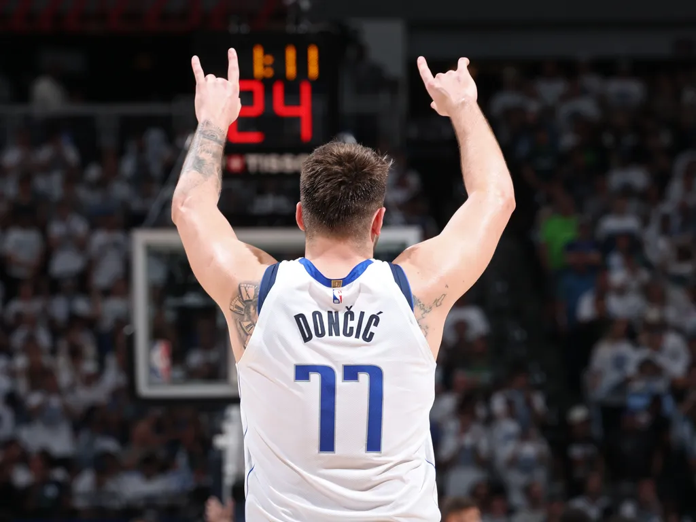
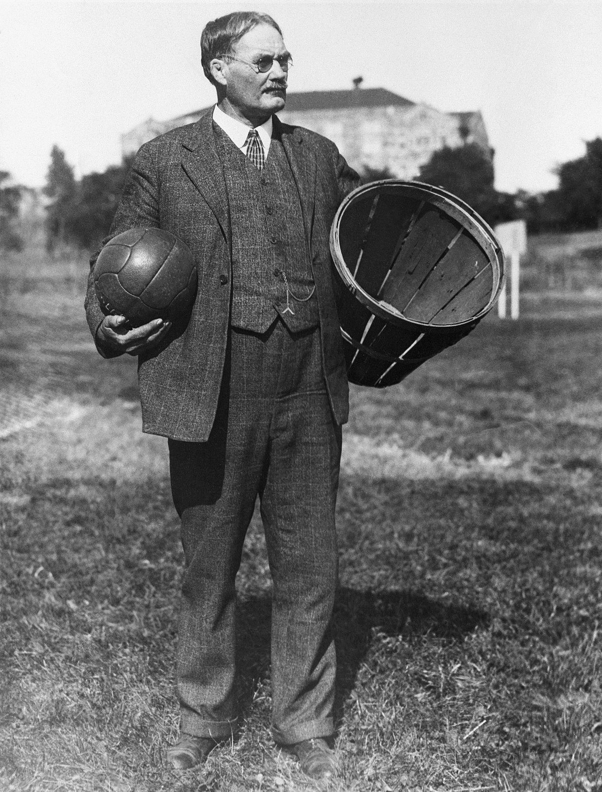

p>Basketball is a team sport in which two teams, most commonly of five players each, opposing one another on a rectangular court, compete with the primary objective of shooting a basketball (approximately 9.4 inches (24 cm) in diameter) through the defender's hoop (a basket 18 inches (46 cm) in diameter mounted 10 feet (3.048 m) high to a backboard at each end of the court), while preventing the opposing team from shooting through their own hoop. A field goal is worth two points, unless made from behind the three-point line, when it is worth three. After a foul, timed play stops and the player fouled or designated to shoot a technical foul is given one, two or three one-point free throws. The team with the most points at the end of the game wins, but if regulation play expires with the score tied, an additional period of play (overtime) is mandated.
Players advance the ball by bouncing it while walking or running (dribbling) or by passing it to a teammate, both of which require considerable skill. On offense, players may use a variety of shots – the layup, the jump shot, or a dunk; on defense, they may steal the ball from a dribbler, intercept passes, or block shots; either offense or defense may collect a rebound, that is, a missed shot that bounces from rim or backboard. It is a violation to lift or drag one's pivot foot without dribbling the ball, to carry it, or to hold the ball with both hands then resume dribbling.
The five players on each side fall into five playing positions. The tallest player is usually the center, the second-tallest and strongest is the power forward, a slightly shorter but more agile player is the small forward, and the shortest players or the best ball handlers are the shooting guard and the point guard, who implement the coach's game plan by managing the execution of offensive and defensive plays (player positioning). Informally, players may play three-on-three, two-on-two, and one-on-one.
Invented in 1891 by Canadian-American gym teacher James Naismith in Springfield, Massachusetts, in the United States, basketball has evolved to become one of the world's most popular and widely viewed sports.[1][2] The National Basketball Association (NBA) is the most significant professional basketball league in the world in terms of popularity, salaries, talent, and level of competition[3][4] (drawing most of its talent from U.S. college basketball). Outside North America, the top clubs from national leagues qualify to continental championships such as the EuroLeague and the Basketball Champions League Americas. The FIBA Basketball World Cup and Men's Olympic Basketball Tournament are the major international events of the sport and attract top national teams from around the world. Each continent hosts regional competitions for national teams, like EuroBasket and FIBA AmeriCup.
The FIBA Women's Basketball World Cup and Women's Olympic Basketball Tournament feature top national teams from continental championships. The main North American league is the WNBA (NCAA Women's Division I Basketball Championship is also popular), whereas the strongest European clubs participate in the EuroLeague Women.
The Founder

James Naismith (NAY-smith; November 6, 1861 – November 28, 1939) was a Canadian-American physical educator, physician, Christian chaplain, and sports coach, best known as the inventor of the game of basketball.[1][2][3] After moving to the United States, he wrote the original basketball rule book and founded the University of Kansas basketball program in 1898.[4] Naismith lived to see basketball adopted as an Olympic demonstration sport in 1904 and as an official event at the 1936 Summer Olympics in Berlin, as well as the birth of the National Invitation Tournament (1938) and the NCAA Tournament (1939).
Naismith studied and taught physical education at McGill University in Montreal until 1890, before moving to Springfield, Massachusetts, United States later that year, where in 1891 he designed the game of basketball while he was teaching at the International YMCA Training School.[5] Seven years after inventing basketball, Naismith received his medical degree in Denver in 1898. He then arrived at the University of Kansas, later becoming the Kansas Jayhawks' athletic director and coach.[5] While a coach at Kansas, Naismith coached Phog Allen, who later became the coach at Kansas for 39 seasons, beginning a lengthy and prestigious coaching tree. Allen then went on to coach legends including Adolph Rupp and Dean Smith, among others, who themselves coached many notable players and future coaches.[6]